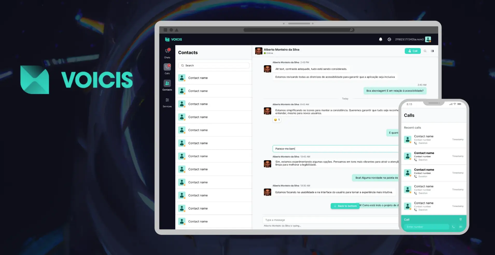
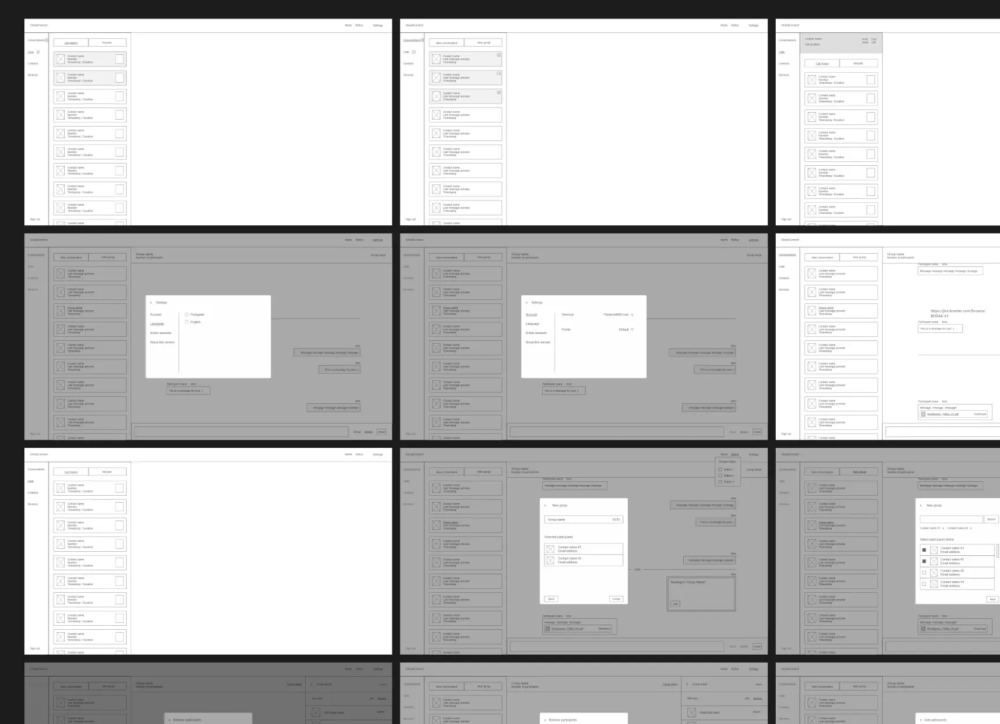
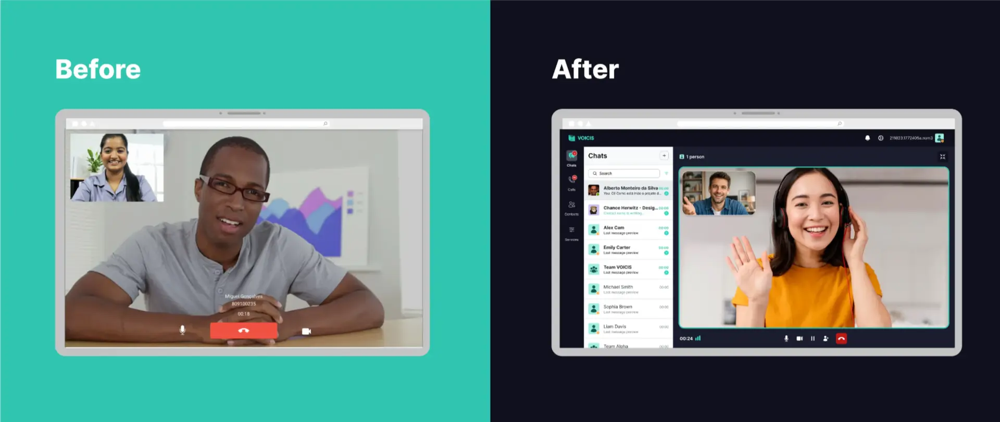
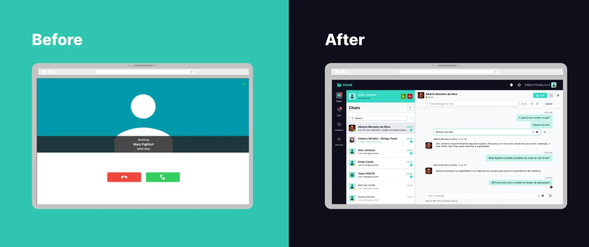
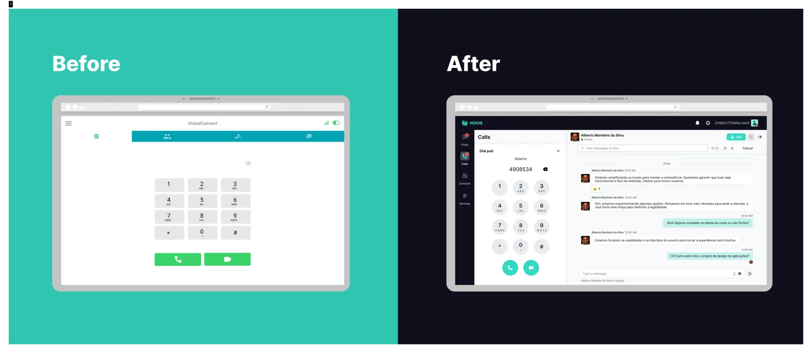
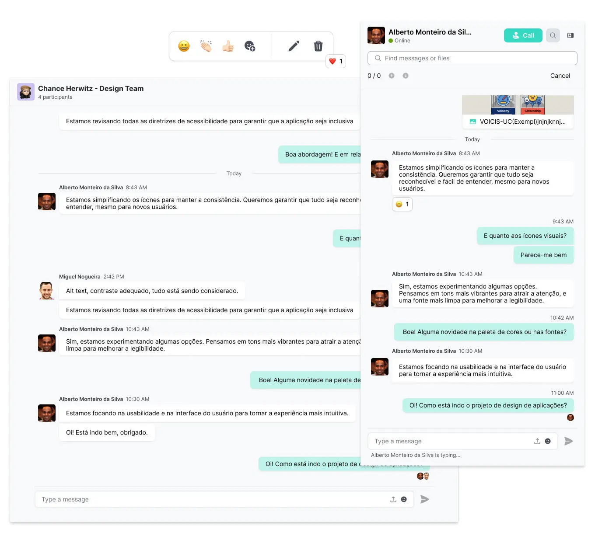

ITCENTER · Comunicações unificadas
VOICIS UC
O redesign de uma plataforma de gestão de chamadas: fluxos mais simples, uma interface moderna e chamadas que já não prendem o utilizador.

A versão curta
Uma estrutura pouco intuitiva, fluxos complexos e inconsistências visuais tornavam a plataforma difícil de aprender — e durante uma chamada não era possível usar o resto do sistema.
Análise competitiva, personas, arquitetura de informação e duas abordagens de wireframes revistas em conjunto com a equipa.
Chamadas que convivem com o chat e as outras tarefas, conversas de grupo e um design system criado de raiz.
Contexto e desafio
Há alguns anos, a ITCENTER desenvolveu uma plataforma unificada de gestão de chamadas com o objetivo de centralizar vários canais de comunicação num único sistema. A solução permitia gerir chamadas, monitorizar fluxos e apoiar o dia a dia das equipas técnicas e operacionais de outras empresas.
À medida que a plataforma cresceu e as necessidades dos utilizadores evoluíram, começaram a surgir limitações de experiência de utilização. A interface tinha uma estrutura pouco intuitiva, fluxos complexos e inconsistências visuais que dificultavam a aprendizagem do sistema, sobretudo para novos utilizadores. Além disso, o produto não correspondia totalmente às expectativas atuais de usabilidade, clareza da informação e escalabilidade.
Neste contexto, surgiu a necessidade de fazer um redesign da plataforma, com foco em melhorar a experiência de utilização, simplificar os principais fluxos e modernizar a interface.
Desafio
- Simplificar uma plataforma tecnicamente complexa sem comprometer funcionalidades críticas.
- Reorganizar os fluxos existentes sem perturbar as operações em curso.
- Criar uma estrutura escalável que suporte evoluções futuras do produto.
- Modernizar a interface segundo os padrões atuais de UX/UI sem perder a identidade.
Descobrir
Identificar os problemas atuais da plataforma
Além da interface desatualizada, a plataforma tinha limitações funcionais que afetavam diretamente o trabalho dos utilizadores:
- Durante uma chamada, não era possível aceder ao resto da plataforma sem desligar a comunicação.
- O chat não permitia partilhar ficheiros nem reagir a mensagens.
- Mudar de terminal obrigava a sair da plataforma, com logout e novo login.
Análise competitiva
O objetivo desta análise foi perceber como o Slack, o Skype e o Microsoft Teams — escolhidos pela sua forte presença nas ferramentas de comunicação e colaboração — distribuem funcionalidades e informação pela interface, identificando padrões eficazes que pudessem ser adaptados ao nosso produto.
Slack
Plataforma de comunicação focada no chat e na colaboração em equipa, organizada em canais e mensagens diretas.
- Coluna à esquerda com todas as conversas
- Área central com o detalhe da conversa
- Barra superior com opções (pesquisa, perfil…)
As chamadas abrem num novo separador do browser.
Microsoft Teams
Plataforma de colaboração empresarial que junta chat, chamadas e partilha de ficheiros, pensada para organizações complexas.
- 2 colunas à esquerda: menu principal e 1.º nível de detalhe (que se pode dividir em 2)
- Área central com o detalhe do conteúdo
- Barra superior com opções (pesquisa, perfil…)
A chamada aparece por cima da segunda coluna, expandida ou minimizada.
Skype
Ferramenta de comunicação centrada em mensagens e chamadas, com foco na comunicação direta entre utilizadores.
- Coluna à esquerda com separadores (chat, chamadas, contactos…) e área superior com opções
- Área central com o detalhe da conversa
A chamada ocupa o ecrã inteiro, mas a coluna da esquerda pode ser recuperada para continuar a navegar. O histórico de chamadas aparece nas conversas.
Conclusões
- Todos os concorrentes usam navegação à esquerda combinada com uma área central de conteúdo.
- Esta estrutura suporta vários níveis de detalhe e acompanha a leitura da esquerda para a direita.
- A navegação adicional é feita com separadores, modais e painéis laterais, mas deve manter-se consistente.
- As chamadas devem continuar dentro da plataforma, suportando tanto o modo multitarefa como o modo de foco total na chamada.
Definir
Personas
Domingos
Diretor do Gabinete de Segurança Tecnológica
- Tem várias reuniões por dia
- Está sempre a circular entre escritórios
- Precisa de saber em que ponto está o trabalho da equipa para tomar decisões
- Odeia ser incomodado com questões menores («tempo é dinheiro»)
- Ser interrompido constantemente nas reuniões de direção estraga-lhe o dia
- Tem dificuldade em equilibrar acompanhar a equipa com estar focado nas reuniões
- Fazer e receber chamadas onde quer que esteja
- Configurar serviços para filtrar as chamadas conforme as suas preferências
- Reunir rapidamente com as pessoas certas da equipa para recolher feedback
Paula
Assistente pessoal do Diretor-Geral
- Quer ajudar o chefe e ser reconhecida pela dedicação e eficiência
- Filtra todas as chamadas que chegam ao gabinete do Diretor-Geral
- Fala com imensas pessoas por dia e decide o que dizer, quando passar, reter, reencaminhar ou ligar mais tarde
- Quer que o chefe só seja interrompido quando é preciso
- O chefe zanga-se quando ela lhe passa uma chamada que ele não queria atender
- Frustra-se quando o chefe passa horas ao telefone e não tem tempo para assinar os papéis que a contabilidade envia
- Está habituada a fazer o trabalho de uma certa forma — mudanças irritam-na
- Detesta que lhe mexam no telefone fixo; verifica as configurações se alguém o mudou de sítio
- Mostrar informação útil sobre a chamada a entrar, para agir depressa e bem
- Configurações avançadas para filtrar chamadas por horário, origem, etc.
- Canais de comunicação unificados para avisar o chefe mesmo quando ele está numa chamada
Micael
Técnico de reparação de computadores
- Responsável por reparações e diagnósticos, sozinho ou a liderar equipas de 2–3 colegas
- É muitas vezes quem fala com os clientes, no local ou quando ligam a pedir apoio técnico rápido
- Tem de manter os colegas do escritório a par de cada operação
- Frustra-o quando não lhe passam informação relevante sobre um cliente — certos detalhes fazem toda a diferença
- Passa muitas horas em deslocação; é difícil trocar feedback com o escritório e tem pouco tempo para fazer ou devolver chamadas
- Evita atender chamadas a conduzir, e frustra-se quando para de propósito para uma chamada que afinal não era importante
- Mostrar informação útil sobre um cliente (no histórico de contactos ou quando a chamada entra)
- Configurações de serviço para filtrar chamadas enquanto anda na estrada
Conclusões
- Mobilidade → precisam de atender e gerir chamadas a partir de qualquer lugar.
- Flexibilidade → querem reduzir interrupções irrelevantes e concentrar-se no que realmente importa.
- Acesso imediato ao que mais importa → histórico de contactos e dados relevantes para decidir depressa.
- Rapidez → a comunicação integrada melhora a coordenação entre equipas e gestão.
Idear
Arquitetura de informação
- Iniciar sessão (com Recuperar palavra-passe)
- Conversas: Lista de conversas; Nova conversa (Conversa 1-1, Conversa de grupo)
- Chamadas: Histórico de chamadas; Teclado flutuante, que leva a Chamada áudio / vídeo
- Contactos: Lista de contactos
- Detalhe da conversa, aberto a partir das listas de conversas, chamadas e contactos: Utilizador / grupo, Importar ficheiros, Chamada áudio / vídeo
- Definições: Perfil e conta (Mudar de terminal, Terminar sessão, que volta a Iniciar sessão); Geral (Idioma); Notificações (Conversas, Chamadas); Sessões ativas (Terminar sessões); Sobre (Informação do produto)
Mapa original: ver imagem

Design
Wireframes
Na fase de wireframes, explorámos duas abordagens e apresentámo-las à equipa. Cada ecrã e cada menu foram revistos em conjunto, e o feedback recolhido serviu para chegar a um consenso sobre a melhor solução para a nova versão.

Versão final
A apresentação da versão final está no Canva: ver a apresentação (abre noutro separador).
Chamadas que já não prendem
Com a nova abordagem, o utilizador pode manter ou receber chamadas enquanto continua a usar o chat da equipa ou qualquer outra tarefa em curso, numa experiência mais fluida, flexível e com mais autonomia.


Mais flexibilidade
Toda a informação e interação com um contacto reunidas numa única janela de conversa — uma experiência menos fragmentada.

Grupos e conversas em tempo real
A plataforma passa a incluir conversas de grupo, criando um espaço simples e organizado para as equipas colaborarem no dia a dia.

Design system
Este design system não surgiu como um mero exercício estético, mas como uma ferramenta estratégica. Ao definir uma paleta de cores consistente, regras claras de hierarquia tipográfica e um conjunto estruturado de componentes reutilizáveis, conseguimos:
- Garantir consistência visual em todas as interfaces e pontos de contacto.
- Reduzir ambiguidades no processo de design.
- Aumentar a eficiência da colaboração entre design e desenvolvimento.
- Minimizar retrabalho e inconsistências na implementação.


Aprendizagens
Redesenhar o Voicis foi muito mais do que um desafio técnico: foi a primeira vez que me senti um verdadeiro Product Designer. Aprendi que design não é só reunir referências de plataformas consolidadas; as ideias evoluem com a análise de mercado, o alinhamento com stakeholders e a colaboração direta com as equipas de desenvolvimento.
Neste projeto tive liberdade para explorar várias soluções para o mesmo problema, o que me deu a confiança necessária para defender e justificar as minhas decisões de design.
Também dei um passo no desconhecido ao decidir construir um design system de raiz. Procurei seguir boas práticas de organização e usar as variáveis do Figma de forma estratégica, para garantir uma base sólida, consistente e escalável para o futuro do produto.